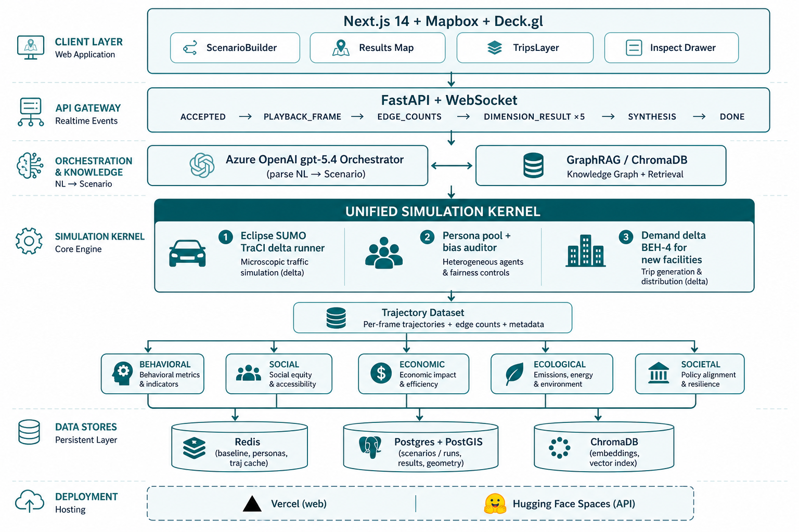

One unified SUMO kernel feeds five impact modules. The LLM parses and narrates; it never invents numbers. This canvas mirrors the live stack: Vercel web + Hugging Face API, Redis caches, and the Scenario v2 intervention model.
Deployed topology: browser → FastAPI/WS → orchestrator + kernel → five modules → synthesis → progressive UI.

Each layer’s job and the concrete packages that own it.
End-to-end path from cockpit / ScenarioBuilder through WebSocket completion.
ScenarioBuilder.buildScenarioQuery turns form state into a controlled English sentence:
lane_closure → “Close N lane(s) on <LOC>.”full_closure → “Fully close <LOC>.”speed_change → “Reduce speed to K km/h on <LOC>.”capacity_change → “Change capacity to P% on <LOC>.”new_facility → “Build a 3,000-seat school at Molo.”Presets like “What if we build a 3,000-seat school in Molo?” post the same POST /scenario body.
Right-click “use location” inserts coordinates into the NL string, not structured GeoJSON (live UI reality).
POST /scenario with { query, input_type: "nl", geometry? }annotate_query_with_gazetteer(query) rewrites Hiligaynon / colloquial place namesretrieve(query, top_k=3) grounds the orchestratorScenarioSchema: intervention_type, location, parameters, descriptiondb.save_scenario stores raw_input, parsed_params, optional PostGIS geometry/scenario/{id} and opens the WebSocketscenario:{id}:latest if warm; else live simulate(Scenario), then write-back (TTL ~7200s). Repeated runs can be <1s.
Two intervention families share one kernel: network edits vs demand edits.
lane_closure · full_closure · speed_change · capacity_change
apply_intervention issues TraCI edits (disallow lanes / setMaxSpeed / speed×factor proxy)edge_countsnew_facility — school / market / terminal
resolve_intervention_site returns ([], "facility-demand") — no corridor TraCIprepare_facility_demand builds BEH-4 gravity trip listinject_facility_demand adds ≤80 sample vehicles via findRoute.net.xml + route fileSIM_END (default 900 s AM-peak window)Trajectory{edge_counts, frames, meta}Exact BEH-4 translation used in production (demand_delta.py / FACILITY_PROFILES).
intervention_type=new_facility,
parameters.facility_kind=school, parameters.capacity=<seats>.
This is not a road geometry change.
| Facility | Capacity unit | trips_per_capacity | redirected_fraction | catchment |
|---|---|---|---|---|
| school | seat | 0.9 | 0.8 (80% retargeted) | 3,000 m |
| market | stall | 1.2 | 0.6 | 2,000 m |
| terminal | bay | 4.0 | 0.7 | 5,000 m |
Mapbox base + Deck.gl overlays; location resolution is an ordered fallback chain.
122.56, lat 10.72, zoom 13, pitch 45°PLAYBACK_FRAMEedge_id ← EDGE_COUNTSpublic/layers/*.geojsonlocation_of_interestPOST /scenario (Point/Polygon). Centroid → edges via geometry.resolve_geometry or facility lon/lat.gazetteer_iloilo.json): “Molo” → coords / sumo_edge / street alias.ILOILO_BBOX = (10.65, 122.50, 10.78, 122.61) — lat_min, lon_min, lat_max, lon_max.
Facilities do not draw a corridor halo; the camera flies to gazetteer / map-drop LoI when available.
Persisted in Postgres+PostGIS when available; otherwise the in-memory fallback in matrix_api/db.py.
| Entity | Key fields | Role |
|---|---|---|
scenarios |
id, input_type (nl|map), raw_input, parsed_params JSONB, geometry |
User intent + orchestrator parse |
Scenario (kernel) |
intervention_type, location, geometry, parameters, legacy corridor/lanes_closed |
Runtime intervention object |
simulation_runs |
scenario_id, status, duration_ms, agent_count, baseline_id |
Run lifecycle + 90 s SLO |
dimension_results |
score, confidence, equation_id, input_dataset_ids, ranges |
Glass-box metrics per dimension |
Trajectory |
edge_counts, frames[], meta (applied, demand_delta, LoI, resolution) |
Single shared simulated reality |
bias_audit_log |
mode_share vs ground truth, max_delta, reweighted |
Public audit (PRD-F6) |
parameters by intervention| Type | Parameters |
|---|---|
| lane_closure | lanes_closed (default 1) |
| speed_change | max_speed_kph (default 30) |
| capacity_change | capacity_factor (default 1.2) — speed proxy; SUMO cannot add lanes at runtime |
| new_facility | facility_kind, capacity (required; no silent default) |
Open-data ingest offline; hot path depends on Redis + startup warmers.
data/fetch/* → raw OSM, CCHAIN, PSA, …build_demand.py)baseline:iloilo:latestpersonas:iloilo:v1 (+ audit key)GET /healthscenario:{id}:latest